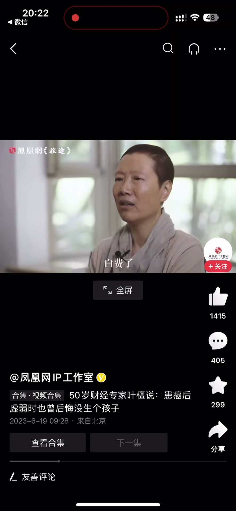
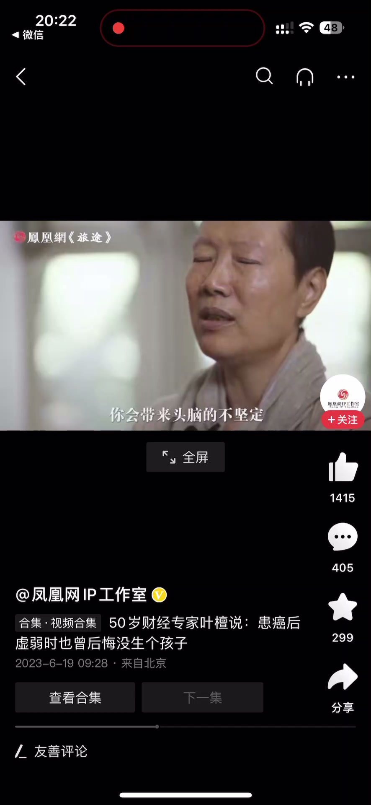
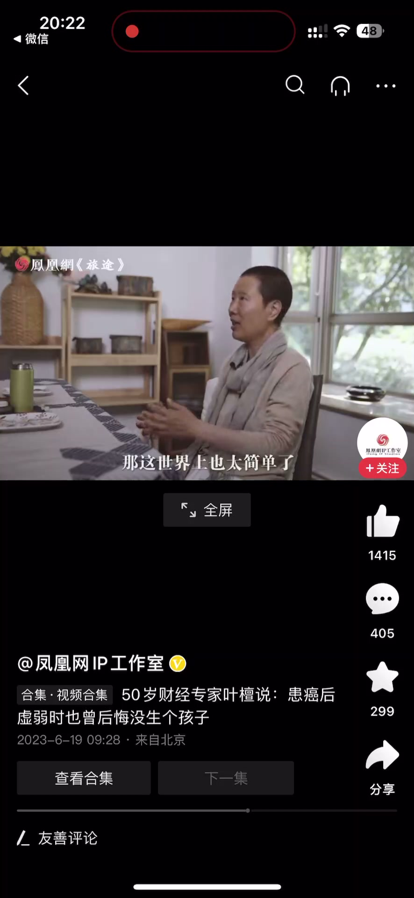
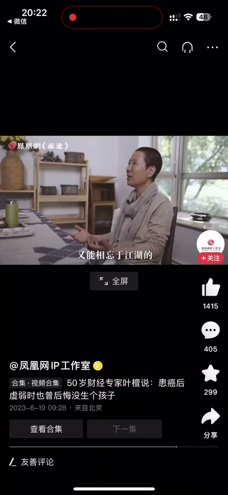
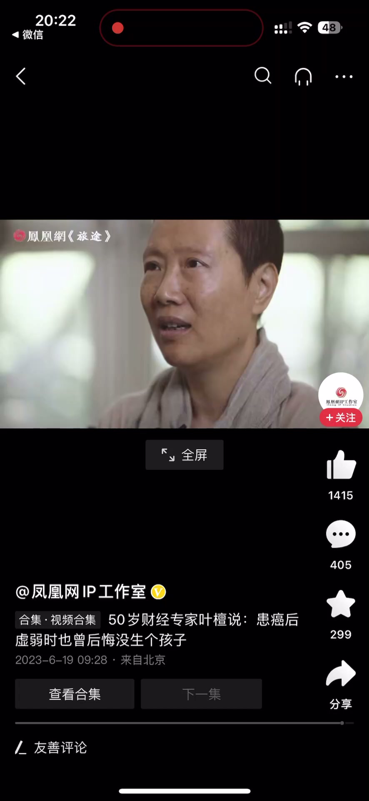

内容要点
一段 43 秒的生命反思：生病时讲者曾长时间怀疑自己——是不是前半生真的都做错了，几十年的努力辛苦是不是全都白费了，做这么辛苦还不如过平常日子，生个娃就算成功了；因为太虚弱会带来头脑的不坚定。后来她彻底想明白：如果有个孩子就什么问题都解决了，那这世界也太简单了，很多问题就不存在了。真正重要的感情，是既能相见又能相望于江湖、然后能天天陪你的那个人——你管他是你的儿子、女儿还是谁。
知识结构
一段时间里怀疑过自己：是不是前半生真的都做错了，几十年的努力辛苦是不是全都白费了；做这么辛苦还不如过平常日子，生个娃就成功了——因为太虚弱，会带来头脑的不坚定。
彻底想明白：如果有个孩子就什么问题都解决了，那这世界也太简单了，很多问题就不存在了。真正重要的感情是既能相见又能相忘于江湖、能天天陪你的那个人，不管是儿子、女儿还是谁。
生病时的怀疑是「虚弱带来的头脑不坚定」；想通之后才明白：能解决问题的是每天实实在在的陪伴，而不是某个身份——相濡以沫，不如相忘于江湖，但要能相见、能陪伴。
00:00-00:20生病时的自我怀疑
在生病的时候，一段时间里我怀疑过自己：我是不是前半生真的都做错了？
我过去的几十年的努力辛苦，是不是全都做错了、白费了？我做这么辛苦，还不如过上平常的日子。我当时生一个娃，那我就成功了。
我真的怀疑过，因为你太虚弱了，会带来头脑的不坚定——怀疑常常是虚弱投射出来的幻影。


00:21-00:43想明白：陪伴比身份重要
后来是彻底想明白：如果说我有一个孩子，我就什么问题都解决了，那这世界上也太简单了，很多问题就不存在了。
那什么样的感情重要？那就是既能相见，又能相望于江湖的；然后他能够天天陪你的，你管他是不是你的儿子、是不是你的女儿、是不是你的谁。
重要的不是称呼和血缘，而是那个人就在你身边。



完整转录（25段）
以下文本由 Whisper medium 模型自动转录，可能存在少量识别误差，已尽可能修正。
在生病的时候一段时间我怀疑过自己
我是不是前半生真的都做错了
我过去的几十年的努力辛苦
是不是全都做错了白费了
我做这么辛苦
我还不如过上平常的日子
我当时生一个娃
那我就成功了
我真的怀疑过
因为你太虚弱了
你会带来头脑的不坚定
后来是彻底想明白
如果说我有一个孩子
我就什么问题都解决了
那这世界上也太简单了
很多问题就不存在了
那什么样的感情
重要
那就是既能相见
又能相望于江湖的
然后他能够天天陪你的
你管他是不是你的儿子
是不是你的女儿
是不是你的谁
我当时在生病的时候一段时间